Figure 11.
Eugène VIOLLET le DUC
Dictionnaire raisonné du mobilier.| 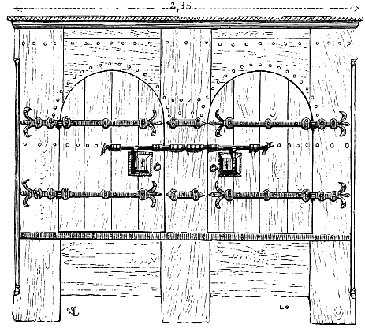 | Figure 1. |
ARMOIRE, meuble peu profond, haut et large, à un ou plusieurs vantaux, destiné à renfermer des objets précieux. Autrefois, dans les églises, il était d'usage de placer des armoires en bois, plus ou moins décorées, près des autels, pour conserver sous clef les vases sacrés, quelquefois même la sainte Eucharistie. Il va sans dire que les sacristies elles-mêmes contenaient des armoires dans lesquelles on déposait les trésors, les chartes et les livres de choeur.
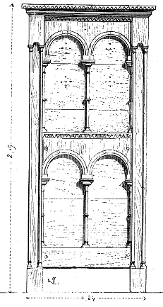
Figure 1.L'un des exemples les plus anciens d'armoires réservées au service du culte existe dans l'église d'Obazine (Corrèze). Cette armoire (fig. 1) se compose de pièces de bois de chêne d'un fort échantillon. Les deux côtés sont plus riches que la face ; ils sont décorés d'un double rang d'arcatures portées par de fines colonnettes annelées (2). Pour compléter ces figures, nous donnons (3) le détail d'un des chapiteaux de l'arcature (4), la vertevelle, et (5) l'extrémité de l'un des deux verrous, se terminant, pour faciliter le tirage ou la poussée, par une tête formant crochet.
|
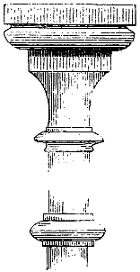 Figure 3. |
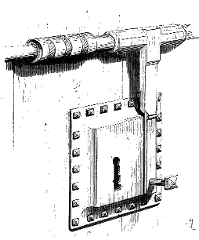 Figure 4. |
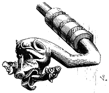
Figure 5.
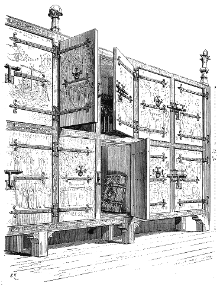
Figure 6.
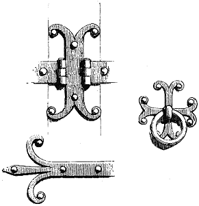 Figure 7 La cathédrale de Bayeux conserve encore, dans la salle du trésor, une armoire du commencement du XIIIe siècle d'un grand intérêt. Cette armoire, mutilée aujourd'hui, occupait autrefois tout un côté de la pièce dans laquelle elle est placée. Les sujets qui garnissent les panneaux sont blancs sur un fond vermillon, les montants et traverses sont remplis par un ornement blanc, courant sur un fond noir avec filets rouges ; les fleurons sont blancs, noirs et rouges. Nous donnons (6) la moitié de cette armoire qui se composait autrefois de huit travées. La fig. 7 présente quelques détails des ferrures ; la fig. 8, un détail de l'un des fleurons terminant le montant du milieu, et les peintures de ces montants et traverses. La menuiserie était d'une grande simplicité ; les planches formant les panneaux assemblés à grain d'orge (9).
|
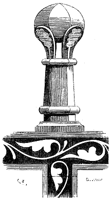 Figure 8. |
Figure 9. |
Une des plus belles armoires anciennes connues se trouve dans le trésor de la cathédrale de Noyon. Les panneaux sont entièrement peints à l'extérieur et à l'intérieur... et déjà le couronnement de ce meuble, qui date des dernières années du XIIIe siècle, est orné de sculptures. Voici un ensemble de cette armoire (10) ; nous supposons les volets ouverts et, comme on peut le remarquer, ces volets sont brisés, c'est-à-dire qu'ils se développent en deux feuilles, afin de ne pas présenter une saillie gênante lorsque l'armoire est ouverte.
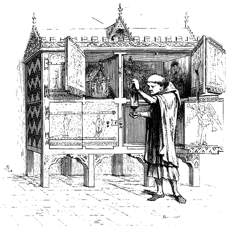
Figure 10.
Figure 11.
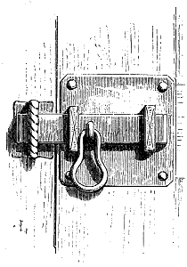 Figure 12 A la fin du XIIIe et au commencement du XIVe, on mariait volontiers la peinture à la sculpture dans les meubles, et le bois sculpté destiné à être peint était parfois couvert de vélin sur lequel on exécutait des gaufrures, des dorures, des sujets et ornements coloriés Les vantaux des armoires présentent rarement, à partir de la fin du XIVe siècle, de ces surfaces unies recouvertes de peinture ; ils se composent de plusieurs panneaux embrevés dans des montants et traverses. Mais, à dater de cette époque, l'art du menuisier et du sculpteur sur bois avait fait de grands progrès ; on ne se contente pas de panneaux simples ; autant pour les renforcer par une plus forte épaisseur vers le milieu, que pour les décorer, ils présentent, le plus souvent, un ornement en forme de parchemin plié. Tels sont les panneaux du vantail de la petite armoire d'une salle de l'église de Mortain (11), fermée par un simple verrou (12). Deux pentures suspendent le vantail ; voici le détail de l'une d'elles (13). A l'appui de la fig. 11, nous donnons diverses combinaisons de ces panneaux figurant des parchemins pliés, si fort en vogue pendant le XVe siècle (14).
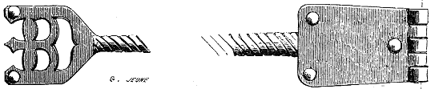
Figure 13.
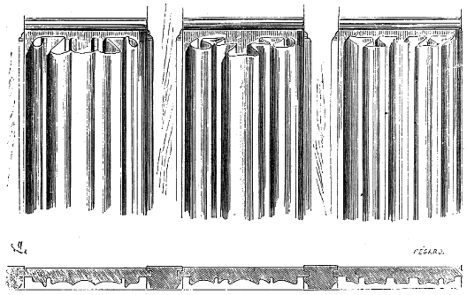
Figure 14.

Figure 15.
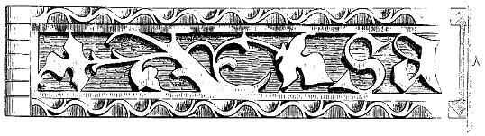
Figure 16.
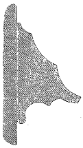 Figure 18 Les armoires du trésor de Saint-Germain-l'Auxerrois à Paris, fin du XVe siècle, portent sur un banc (15) dont la tablette se relève. Ici les vantaux sont unis, sans peintures, décorés seulement de jolies pentures en fer plat découpé et d'entrées de serrures posées sur drap rouge. Les pentures de cette armoire sont en tôle épaisse ajourée ; celles des vantaux du haut (16) sont ornées d'inscriptions et de feuillages compris entre deux tringlettes en fer carré décorées par des coups de limes qui composent, par leur alternance, un petit rinceau de tinettes, ainsi que l'indique la coupe A ; celles des vantaux du bas sont simplement ajourées sans tringlettes. Nous donnons (17) l'extrémité de l'une d'elles. La construction de ce meuble est fort simple ; les montants ne sont pas des poteaux carrés, mais des madriers de 0,10 centimètre de face sur 0,05 centimètre d'épaisseur, reliés par des traverses sur lesquelles une moulure (18) est clouée. Une frise à jour couronne la traverse supérieure entre les têtes des montants. Le banc et les cotés du meuble sont formés de panneaux présentant des parchemins pliés. On remarquera que les montants sont terminés par des bouquets A dont la face antérieure seule est ornée de crochets sculptés aux dépens de l'équarrissage du bois.

Figure 17.
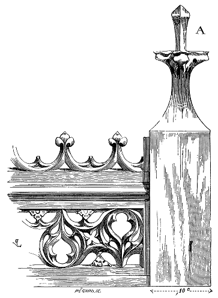
Figure 19.
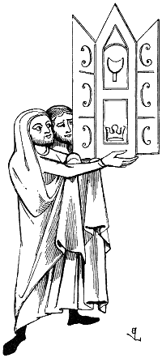
Figure 20.On avait également, dans les trésors, de petites armoires portatives destinées à contenir quelques reliques que l'on transportait avec le meuble qui les contenaient (20).